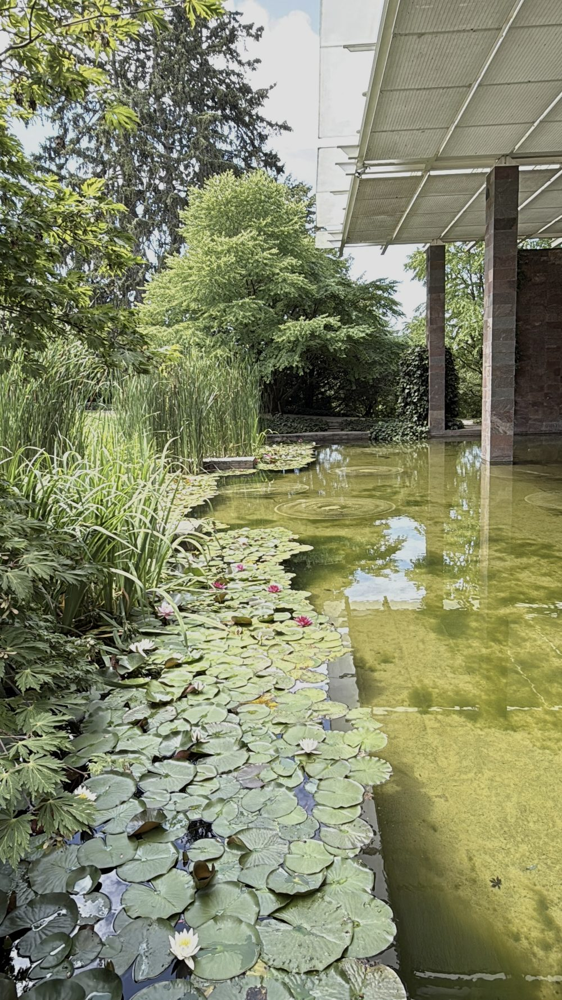

アートアドバイザーというと、作品の仲介や売買を行う仕事だと思われるかもしれません。もちろん、それも私たちの大切な役割のひとつです。しかし、CoaLabが本当に大切にしているのは、その先に続く時間です。 An art advisor is often imagined as someone who simply buys, sells, or brokers artworks. That is indeed one of our important roles. But what CoaLab truly values is the time that follows.
どの作品と出逢い、どのようにコレクションを育てていくのか。正解が一つではないマーケットの中で、お客様それぞれの美学に寄り添いながら、ともに考え、選び、美術資産を築いていく。 Which works you meet, and how a collection is raised from there. In a market with more than one right answer, we think, choose, and build art assets together — always close to each client's own aesthetic.
そして、そのコレクションが、そこに込められた美学とともに、文化資産として次の世代へと受け継がれていく。 And in time, that collection — together with the aesthetic it embodies — is passed on to the next generation as a cultural asset.
私たちは、作品を紹介して終わるのではなく、その後も続く永い時間を、お客様とともに歩む存在でありたいと考えています。 Our role does not end with an introduction to a work. We hope to remain beside you throughout the long years that follow.
作品を迎えるまでの数ヶ月から、収蔵後の数十年まで。価格交渉、輸送、保管、保険、修復、売却及び相続などコレクションにまつわるさまざまな場面に、永い時間軸で寄り添います。 From the months before a work arrives to the decades after it enters a collection — price negotiation, shipping, storage, insurance, conservation, sale, and inheritance — we stay close through every moment of a collection's life, on a long horizon.
アートの世界には、独特の慣習や仕組み、言葉があります。専門用語や価格の仕組み、フェアやオークションの作法までをわかりやすくお伝えし、その世界に踏み出せるようサポートいたします。 The art world has its own customs, systems, and vocabulary. We explain jargon, pricing structures, and the etiquette of fairs and auctions in plain terms, so that you can step into that world with confidence.
来歴・真贋・コンディション・評価・将来性。作品を迎える前に確認すべき多くの要素を、客観的な視点から見極め、お客様のフィロソフィーが反映されたコレクションの構築を長期的にお手伝いします。 Provenance, authenticity, condition, valuation, future potential. We assess the many elements that deserve consideration before a work is welcomed — with an objective eye — and help you build, over the long term, a collection that reflects your own philosophy.
アートの世界は、ときに敷居が高く、閉ざされた世界のように映るかもしれません。けれども、その世界に一歩足を踏み入れれば、そこには、ある意味フラットで、知的好奇心を満たしてくれる世界が広がっています。
その入り口をつくり、新たな出会いや体験へとご案内します。
The art world can appear exclusive, even closed. Yet take one step inside and you find a world that is, in its way, remarkably open — one that rewards intellectual curiosity. We build that doorway, and guide you toward new encounters and experiences.
外資系スポーツアパレル企業を経て、ブランディング会社へ。外資系企業のブランディング、プロモーション、イベントの企画・運営に携わる。 After a global sportswear company, she moved to a branding agency, working on branding, promotion, and event planning and production for international clients.
自身でもアートを収集する中で関心を深め、ニューヨークでアートビジネスを学ぶ。2023年、CoaLab株式会社を設立。 Collecting art herself deepened her interest, leading her to study the art business in New York. In 2023 she founded CoaLab Inc.
国内外のギャラリーやアートフェアとのネットワークを築き、個人コレクターや企業を対象にアートアドバイザリーを行う。作品の選定・取得から、コレクション形成、管理、売却及び次世代への継承まで、長期的な視点でサポートしている。 Building a network of galleries and art fairs in Japan and abroad, she advises private collectors and corporations — from the selection and acquisition of works to collection building, management, sale, and succession to the next generation, always with a long-term view.
現在はArt Fair TokyoのVIP Relationsも務め、コレクターとギャラリーをつなぐVIPプログラムに携わる。 She also serves as VIP Relations for Art Fair Tokyo, working on the VIP program that connects collectors and galleries.